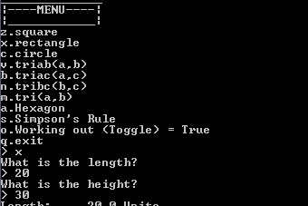

Home
Home
PyMathCalc!
PyMathCalc is a small program I started making in Python just as a hobby project.
Firstly the reason for making it in Python is that I had recently just finished the Python NCSS Challenge(2011) and thought it would be rather easy compared to learning another language.
Secondly, why did I make the program? Well my reason for making the program was to get through the large amounts of maths homework I expect this year (year 12) but to also be able to give me workings as well.
What are your aims? I aim to make this a modular program which anyone can add to. I also plan to update this program throughout the year, as I learn more, the program will learn more.
This is covered by the Creative Commons
BY - NC - SA
http://creativecommons.org/licenses/by-nc-sa/3.0/au/
Original Creator William Pemberton
Visit the Github auto-generated page or use the link below(Looks better)
View source & download